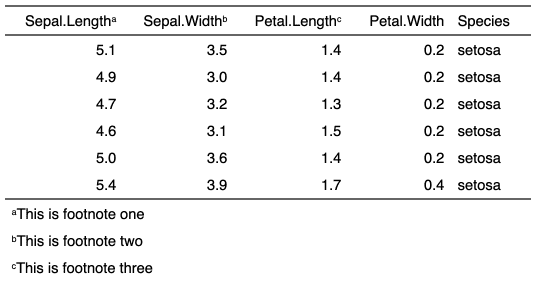
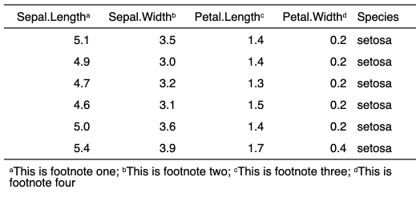

| footnote {flextable} | R Documentation |
add footnotes to a flextable object. A symbol is appened where the footnote is defined and the note is appened in the footer part of the table.
footnote( x, i = NULL, j = NULL, value, ref_symbols = NULL, part = "body", inline = FALSE, sep = "; " )
x |
a flextable object |
i |
rows selection |
j |
column selection |
value |
a call to function |
ref_symbols |
character value, symbols to append that will be used as references to notes. |
part |
partname of the table (one of 'body', 'header', 'footer') |
inline |
whether to add footnote on same line as previous footnote or not |
sep |
inline = T, character string to use as a separator between footnotes |


ft_1 <- flextable(head(iris))
ft_1 <- footnote( ft_1, i = 1, j = 1:3,
value = as_paragraph(
c("This is footnote one",
"This is footnote two",
"This is footnote three")
),
ref_symbols = c("a", "b", "c"),
part = "header")
ft_1 <- valign(ft_1, valign = "bottom", part = "header")
ft_1 <- autofit(ft_1)
ft_2 <- flextable(head(iris))
ft_2 <- autofit(ft_2)
ft_2 <- footnote( ft_2, i = 1, j = 1:2,
value = as_paragraph(
c("This is footnote one",
"This is footnote two")
),
ref_symbols = c("a", "b"),
part = "header", inline = TRUE)
ft_2 <- footnote( ft_2, i = 1, j = 3:4,
value = as_paragraph(
c("This is footnote three",
"This is footnote four")
),
ref_symbols = c("c","d"),
part = "header", inline = TRUE)
ft_2